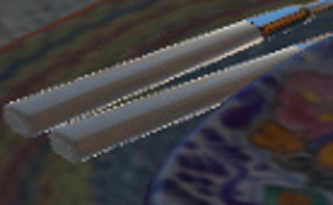
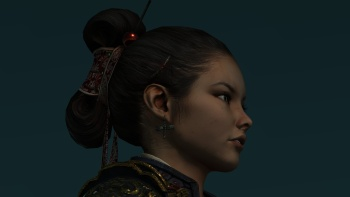
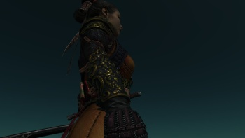
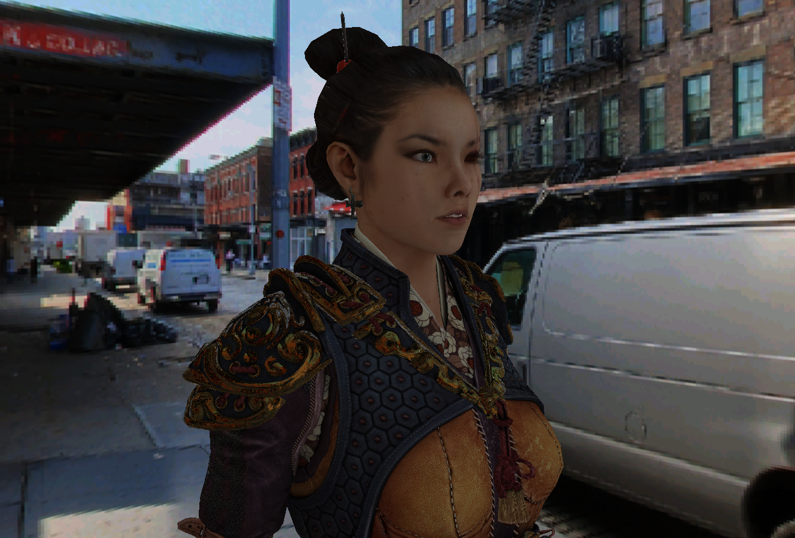

glebedev
I hope someone would be interested. I’ve imported couple free/cc assets into Urho3D:
Could someone help me to make pretty Urho3D demos from it? By “help” I mean fixing materials, lighting etc.

I hope someone would be interested. I’ve imported couple free/cc assets into Urho3D:
Could someone help me to make pretty Urho3D demos from it? By “help” I mean fixing materials, lighting etc.


Good job!
I think the best direction is to make all materials PBR first… Unsure if I have time for it now, but it definetely should be done at some point.
I hope this would inspire you - all materials converted to PBR.


Nice.
It could be good start point for technical improvements in shaders and posteffects (e.g. SSAO)
BTW, @dragonCASTjosh, any ideas about this (Fresnel?) noise at the edges?

Nyra is very nice. Is it rigged?
20K tris will be perfectly shown even on low mobile devices.
I don’t think so.
You could try Mixamo to make it moving quickly, but it could have problems caused by model pose.
There is a T-pose available. I just ignored it. From what I know there aren’t bones in it too.

@glebedev nice work on getting SanMiguel in engine, if possible can you include roughness/metallic maps for the materials
@Eugene bit sure what you mean but i have still doing rendering work at the moment so be ready for a cool rendering branch at some point
Mixamo could auto-rig and auto-animate T-pose models. Joints animation is nasty, but some small animaions looks ok.
I’m about these pixels:

If I understand things correctly, the noise appears because non-metal materials get reflective at the very tiny edge.
It will probably look much better with screen-space reflections (Note: second important thing).
Yea from my understanding it a mix a small things such as no AA, secular aliasing and maybe a few issues with some of the Fresnel math. Its something ill be keeping my eye on and if its still a problem after TAA and AO then ill come back to it
I’ll check again but I think I’ve added all available textures 

 
Nyra gallery
Here are two rough-draft PBR roughness/metallic map textures for anyone to play with. It’s very unfinished (e.g. much of the gold is not yet ‘metal’).
Created from the full-resolution TGAs for body/head (at 48MB/12MB). Ad-hoc process: Invert specular map for roughness (red channel), various tweaks for metalness (green channel). The gallery shows some downsampled versions of these.
<material>
<technique name="Techniques/PBR/PBRMetallicRoughDiffNormalSpec.xml"/>
<texture name="Textures/body_d.tga" unit="diffuse"/>
<texture name="Textures/body_n.tga" unit="normal"/>
<texture unit="specular" name="Textures/body_properties.tga" />
<parameter name="UOffset" value="1 0 0 0" />
<parameter name="VOffset" value="0 1 0 0" />
<parameter name="MatDiffColor" value="1 1 1 1" />
<parameter name="MatEmissiveColor" value="0 0 0" />
<parameter name="MatEnvMapColor" value="1 1 1" />
<parameter name="MatSpecColor" value="1 1 1 1" />
<parameter name="Roughness" value="0" />
<parameter name="Metallic" value="0" />
<cull value="ccw" />
<shadowcull value="ccw" />
<fill value="solid" />
<depthbias constant="0" slopescaled="0" />
<alphatocoverage enable="false" />
<renderorder value="128" />
<occlusion enable="true" />
</material>Sorry, it took me so long…


What’s with the white spots?
What’s with the white spots?
It’s the pair of scene setup and non-HDR pipeline. The skybox that’s included in the sample content isn’t suitable for PBR - it’s both inappropriately high resolution and doesn’t have convolved mipmaps.
You can see the skybox in the nose, forehead, and corners of the skin around the eyes - which is going to be partially from mips not being convolved and the PBR shaders not being great for skin. White-leaning cubemaps are also generally problematic.
The HDR pipeline would smooth out the severity of the highlight edges during the tonemapping/bloom.
Fixed by switching to HDR skybox.